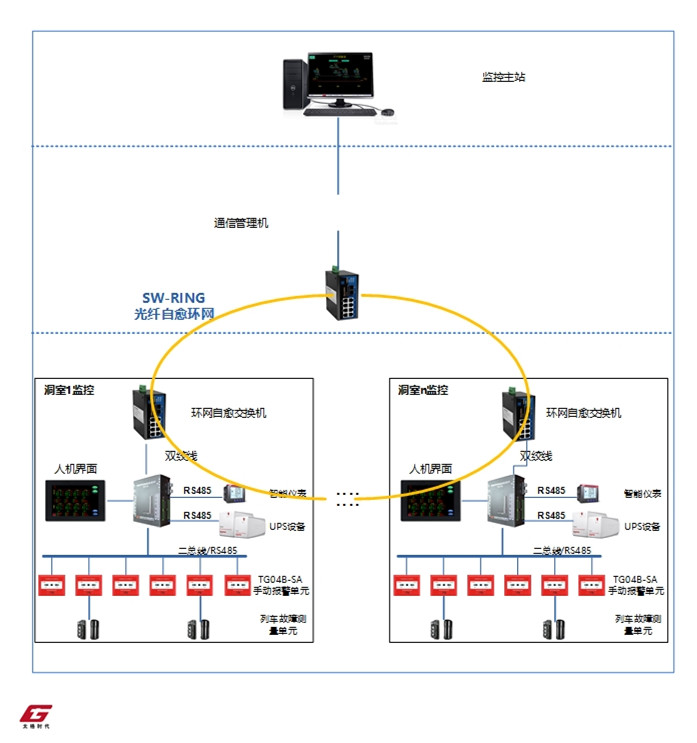
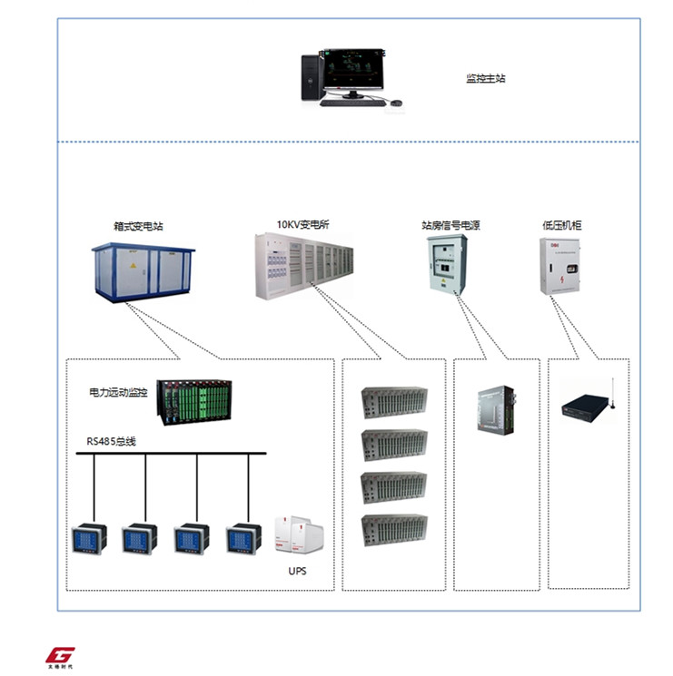
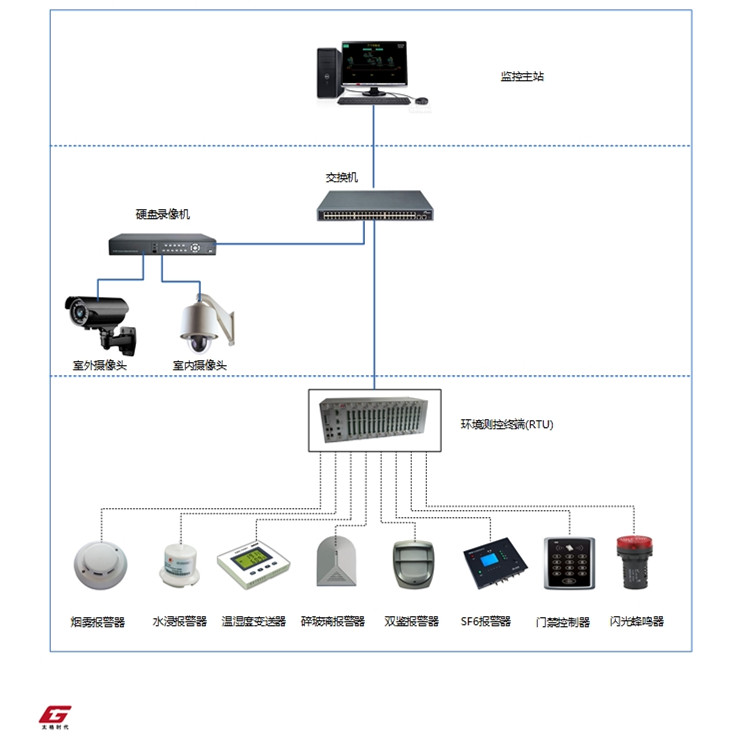
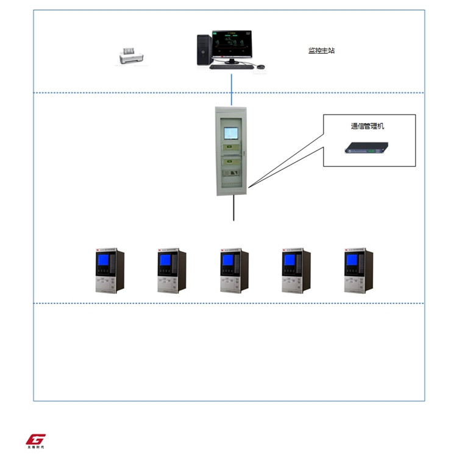
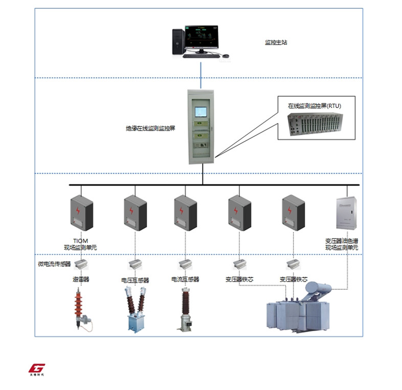
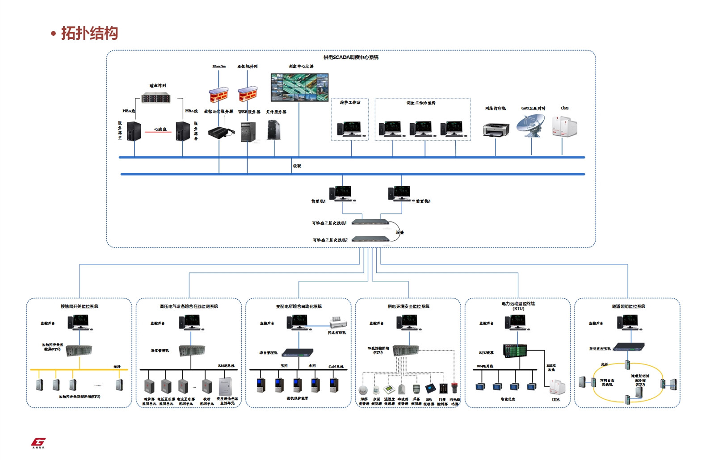
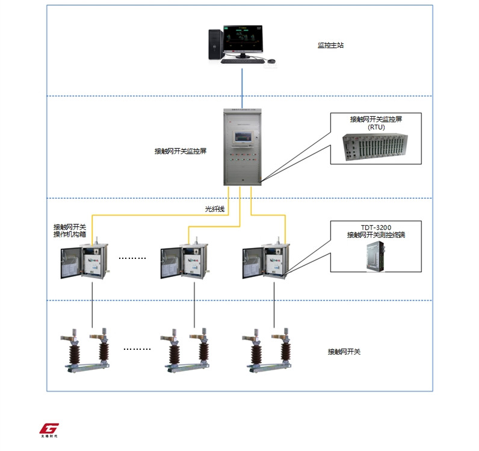

股票代码 : 603977
股票简称 : 国泰集团
股票代码 : 603977
股票简称 : 国泰集团
隧道照明及防灾救援系统，主要应用于铁路隧道的人员救援、疏散。其通过监控列车在隧道内的运行车速，判定列车故障状态，自动启动防灾救援系统。同时在紧急情况下，人员还可通过手动触发设置在隧道沿线的手动报警按钮单元启动防灾救援监控系统。
系统采用光纤自愈环网、现场总线组建隧道照明监控系统，系统主要组成设备包括：通信管理机、环网自愈交换机、中央控制单元、手动报警单元、列车故障测量单元组成。

远方测控终端RTU，适用于各类箱式变压器、10/0.4KV低压变电所、低压信号电源、开关站、环网柜等监控场合。可用于采集现场电力运行的状态和测量数据，向调度端传达信息，执行调度端下发的控制和调度命令。除具备传统的遥控、遥信、遥测、遥调“四遥”功能外，还具备故障判断、故障录波、故障切除等馈线保护功能，还可通过RS485，CAN总线实现外部设备的数据采集如：智能仪表（Modbus、DLT645）、UPS设备、EPS设备。

供电环境安全监控系统，主要为保证牵引供电及电力供电系统的可靠运行而设置，其通过对变电所、箱变内图像、温度、湿度、烟雾、玻璃、SF6气体等进行监控，提前发现所内环境异常现象，触发报警并上报监控主站。
供电环境安全监控系统的组成包括：监控主站、视频设备、环境测控终端RTU、环境传感器（温/湿度、烟雾、水浸、玻璃、门禁、SF6气体等）。其中环境测控终端RTU、环境传感器等设置在箱变、变电所内。

变电所综合自动化系统采用分层分布式结构，即可分散安装，也可集中组屏，其中一部分为3层结构：站控层、间隔层（或称单元层）、过程层（或称设备层）。
站控层主要包括：监控主机（管理维护）、通信设备、报警设备、通信设备与调度中心接口等；
间隔层设备包括测量、控制部件和微机保护装置；
过程层主要指所内的变压器、断路器、隔离开关、电流互感器等一次设备。

变电站绝缘在线监测系统主要安装在高压变电所内，其通过实时监测高压设备的绝缘参数、变电器的油气参数、温度参数等相关数据，提前预警设备的绝缘缺陷，避免重大安全事故的发生。
该系统主要由监控主站和现场监控设备两部分构成。其中现场监控设备包括：绝缘在线监测控制屏、现场监测单元、微电流传感器、高压电气设备。现场监测单元、微电流互感器直接安装在被监控的高压电气设备附近就地采集相关数据。

铁路供电综合SCADA系统是利用远程通信技术进行信息传输，实现对现场设备的远程监控和控制，其系统组成主要包括：调度中心系统、被控站系统、通信通道、复示设备等。
铁路供电综合SCADA系统的子系统包括：调度中心系统、接触网开关监控系统、高压电气设备综合在线监控系统、变配电所综合自动化系统、供电环境安全监控系统、电力远动测控终端等。
SCADA调度中心统一指挥供电系统的运行工作，并集中管理铁路沿线分布的牵引变电所、分区所、开闭所、AT所、配电所、开关站、箱式变电站等电力设备。系统通过记录历史数据，并通过表格、图形等显示形式还原各个时刻运行状态。便于在事故情况下辅助调度人员及时准确的了解事故的原因和范围，通过分析判断，对现场下达命令，从而快速完成事故处理。
整体解决方案拓扑示意图

高速铁路供电SCADA调度中心采用分层、分布式架构，调度端分两层，第一层位于铁路总公司的调度中心系统，第二层是分布在各路局的调度所系统，实现对全国范围内的供电系统调度指挥。
铁路总公司调度中心系统或路局调度所系统均采用统一的硬件平台和系统软件平台，同时辅以统一完善的系统管理和安全保障体系，满足高速铁路供电远动系统的互操作/互联性，以及应用的集成性要求。
接触网开关监控系统
采用分层式，模块化体系设计，集测控、光纤通信功能于一体，可实现对枢纽站场、区间隔离变压器的集中监控，该系统实时采集隔离变压器的运行状态，并和供电SCADA调度中心进行实时数据通信，向调度中心上报现场设备运行数据，并执行调度中心下发的控制类，参数类整定类命令。
该系统可根据客户定制高寒直控驱动方案，光纤优化控制方案等，也可根据现场其他应用需求，配置实现不同的应用方案。

变电所微机五防系统，是借助电脑钥匙，智能锁具实现对变电所电气设备的逻辑闭锁功能，从而有效避免5种恶性电气事故的发生：防止误入带电间隔、防止带负荷误拉（合）隔离开关、防止带接地开关（接地线）合隔离开关、防止带电合（挂）接地开关（接地线）、防止误分合断路器。
五防系统主要由以下设备组成：五防主机、通信适配器、电脑钥匙、智能电气编码锁组成。
供电管理信息系统（EMIS），是为实现铁路供电系统的信息化管理，提高设备检修、协同办公效率而设立，系统在完善高铁设备基础数据库平台的基础上，建立供电运行检修数据管理平台，并与其他系统对接，实现全路的高铁供电设备基础数据信息的互联互通，形成覆盖全路的供电资源基础信息平台。
平台主要包括：供电调度指挥、运行检修管理、技术管理、安全监控、应急处置、协同办公等子系统。

牵引供电设备智能巡检系统，是铁路系统巡检作业管理的一体化信息平台，该系统强化对一线作业的管理，按照设定的巡检计划和任务，定人、定点、定期、定方法、定标准进行全过程管理。该系统可实现记录现场信息，使各级生产管理人员及时直观的掌握各类设备的运行工况，发现设备的运行异常、缺陷等安全隐患，保证设备安全运行，实现对设备运行管理工作的规范化、标准化、精细化。

牵引供电多媒体仿真培训系统，是针对目前铁路牵引供电专业的培训教学需求而设计开发的一款培训系统，该系统采用学、练、考相结合的全新培训模式，基于多媒体技术、三维实时引擎技术建立牵引供电仿真模型，实现对牵引供电业务的三维重现，使学习者身临其境的进行实际操作，提高现场人员的技术水平和实际操作能力。
系统主要组成设备包括：教师机、服务器、投影仪、交换机、学员机等。

6C系统综合数据处理中心，是6C系统各装置所采集数据及相关数据的集中汇集处理与综合分析和展示平台，可实现对铁路供电设备综合检测数据的集中存储和设计、数据融合、挖掘、预测预警，为调度管理及供电运营维护人员提供维修、抢修的作业依据，为供电运营决策提供准确可靠的数据支持。

铁路供电调度指挥系统是电气化铁路的综合性安全生产信息管理平台，其用于监控管内牵引供电设备运行状态、指导设备故障应急抢修、管控安全生产全过程及实现专业技术管理信息化。
系统组成包括：供电设备基础数据平台、供电运行检修平台、供电运行预测决策平台等。
系统在实现对电力远动系统、视频监控系统、6C数据中心系统、信息管理系统、日常办公系统等子系统模块化管理上，实现了对各子系统间数据信息的互联互通，将各类基础数据纳入大数据中心管理，满足各子系统实时访问、调取基础数据需求，并通过对海量数据的统计分析，形成针对生产运营的智能化决策方案。

TMIS3000车辆架大修管理系统主要用于实现对车辆架大修过程的精细化管理，系统包括基础信息管理模块、故障管理模块、移动巡检模块、工器具管理模块等。
1）基础信息管理模块：该模块用于实现对架大修相关设备和人员的基础信息管理，其包括电车基本信息管理、组织结构管理、人员管理、作业班组管理等。
2）故障数据管理模块：该模块用于实现对车辆故障信息的全过程管理，其实现从故障登记、故障通知、故障处理、故障验证、分类统计的闭环控制。
3）移动巡检模块：该模块用于实现对巡检的规范化、智能化管理，其通过采用二维码技术、结合移动巡检PDA设备、综合管理软件等实现对巡检过程的规范化控制及巡检数据的统一化管理；
4）工器具管理模块：该模块采用RFID技术实现将工器具的入库、领用、试验等工作环节纳入一个规范、统一的平台中管理，实现对工器具生命周期的完整管理。

铁路杂散电流综合监控系统，是为保障地铁的轨道安全而设置，其通过监测迷流对沿线土建结构钢筋及其周围的金属管线或者城市轨道交通系统外部的地下金属官网产生的电化学腐蚀，并对超标点进行报警。通过该系统监测，调度管理或技术人员可以及时了解当前结构钢筋极化电压分布情况以及分布趋势，利于运营管理部门采取预测措施，减少杂散电流导致的金属腐蚀。
铁路杂散电流综合监控系统主要组成包括：监控主站、杂散电流综合监控装置、排流柜、参比电极等。

TG-2008-TS轨道交通BAS系统主要实现对地铁建筑物内的环境与空气条件、通风、给排水、照明、乘客向导、自动扶梯及电梯、屏蔽门、防淹门等建筑设备和系统进行集中监视、控制和管理。
从系统组成角度看BAS系统的组成包括以下几个部分：中央级BAS系统、车站级BAS系统、现场控制设备、通信网络。

TG-3000-PSCADA轨道交通电力监控系统采用分布式、模块化体系结构，可实现对变电所、接触网设备运行的实时监控和数据采集，并通过对数据的分析完成对供电系统及设备的事故分析和维护维修调度管理。
该系统的组成主要包括以下几个部分：调度控制中心（主站系统）、主变电站、车站（车辆段）牵引降压混合变电所、车站降压变电所、跟随所等所。

城市轨道交通综合监控系统（Integrated
Supervisory Control
System，简称ISCS）是指对城市轨道交通线路中所有电力和机电设备进行监控的分层分布式计算机集成系统，系统组成包括：列车自动监控系统、电力监控系统、火灾报警系统、机电设备监控系统、屏蔽门系统等子系统。
该系统将各分散的自动化系统联接为一个有机的整体，实现轨道交通各专业系统之间的信息互通、资源共享，提高各系统的协调配合能力，高效的实现系统间的联动，提高了轨道交通的整体自动化水平，增强了应对各种突发事件的应变能力，提高轨道交通的运营管理水平。

产品系列包括：铁路工器具、仪器仪表及其配件供应及服务。

产品系列包括：地铁变电所检测、线路维护、车辆维修等提供解决方案。

综合电气试验车是一个可移动的实验室，由高压及二次电气试验系统组成。集试验计划制定，试验方案指导，试验实施，试验结果分析处理，试验报告生成及打印，试验数据查询分析，试验数据信息化管理等功能为一体，适用于供电系统110KV二次设备保护校验、35KV环网系统及直流牵引供电系统变电二次设备的检测，0.4KV二次设备保护校验。

车辆段工艺设备、供电车间设备、仪器仪表灯轨道交通设备的集成与服务，涵盖供电专业检测设备、变电电气试验车（一次、二次）、电气化轨道交通测试仪器、专用工器具等的生产和研发以及城市轨道交通行业设备集成咨询及服务。